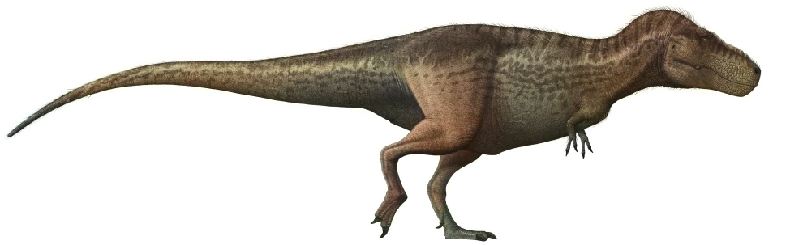
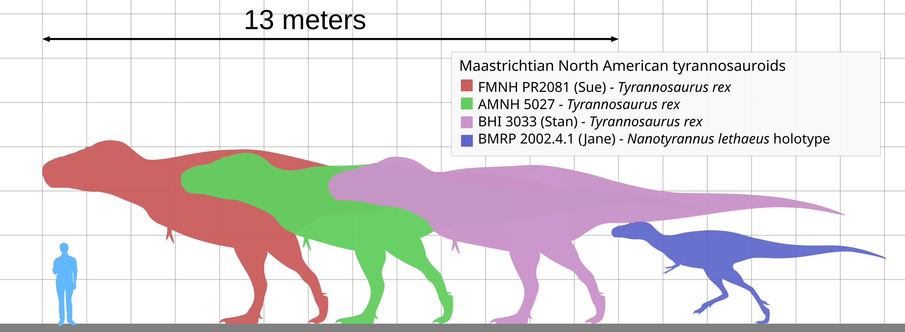
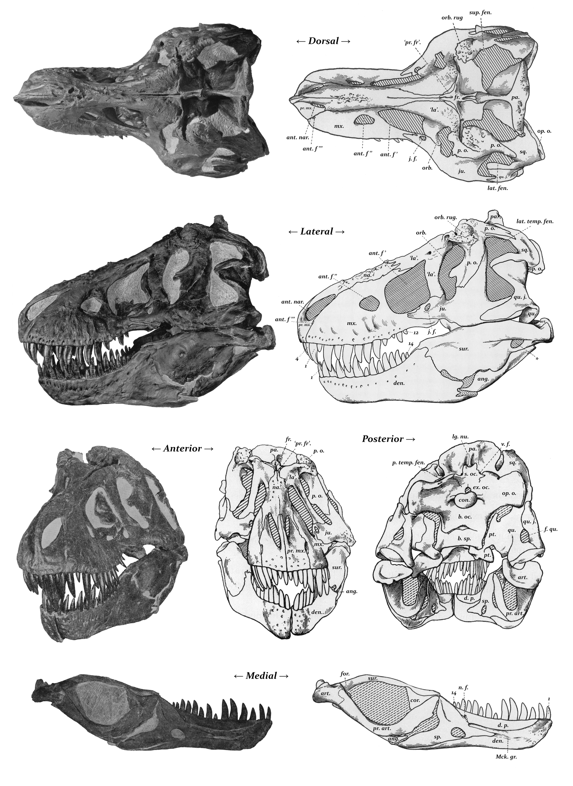
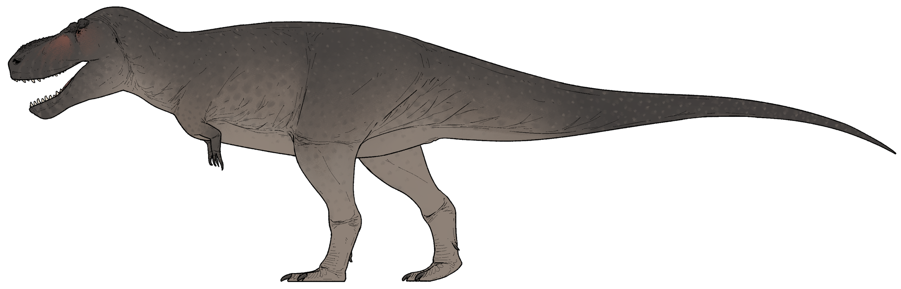
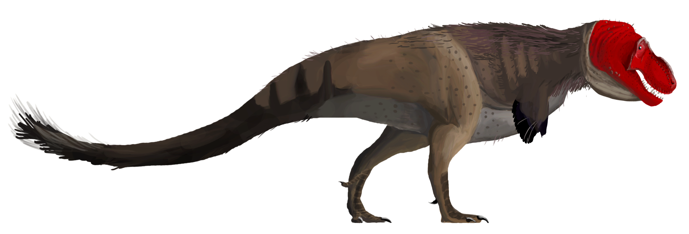
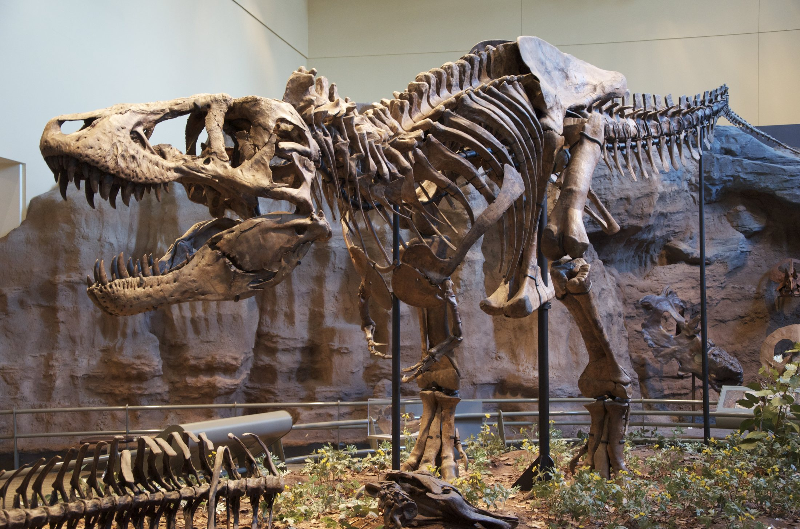
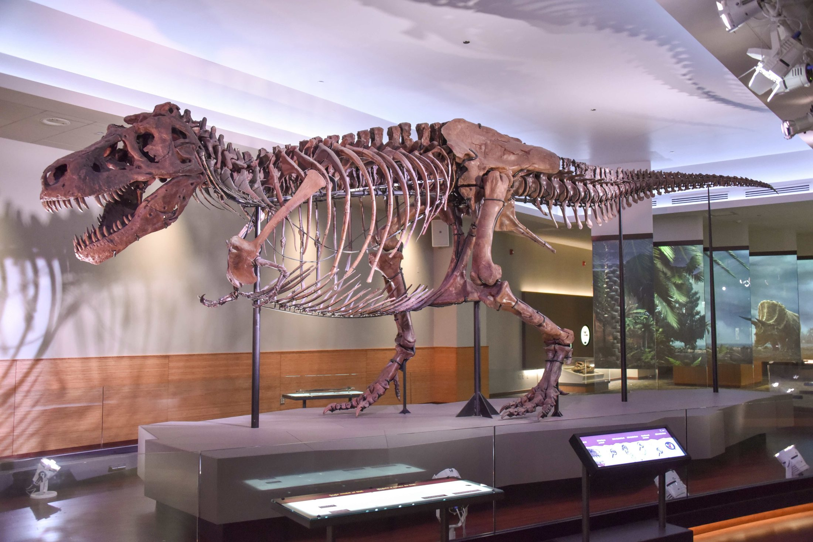

T. rex: Clues from the King
A Real Dinosaur Mystery

A Real Dinosaur Mystery
Meet T. rex! Its full name is Tyrannosaurus rex, which means tyrant lizard king. This giant dinosaur lived near the end of the Cretaceous Period.
T. rex was huge, but it was not a stiff tail-dragger. It held its body forward, balanced by a long, heavy tail.

Powerful back legs carried T. rex across ancient North America. Its giant head reached forward, and its tail helped keep the whole animal steady.
Open wide! T. rex had about 60 teeth. They were serrated like tiny saws, and its jaws could crunch bone.


Was T. rex a hunter or a scavenger? Scientists think it could be both. Many meat-eaters hunt when they can and eat found food when they find it.
Those tiny arms are famous! Compared with the body, they were small. But they had strong muscles, and scientists still study what T. rex used them for.


We do not have a photograph of a living T. rex. We have fossils! Bones, teeth, bite marks, and growth rings help scientists build the story.

One famous T. rex is called SUE. SUE was found in South Dakota and is one of the largest and most complete T. rex skeletons ever discovered.